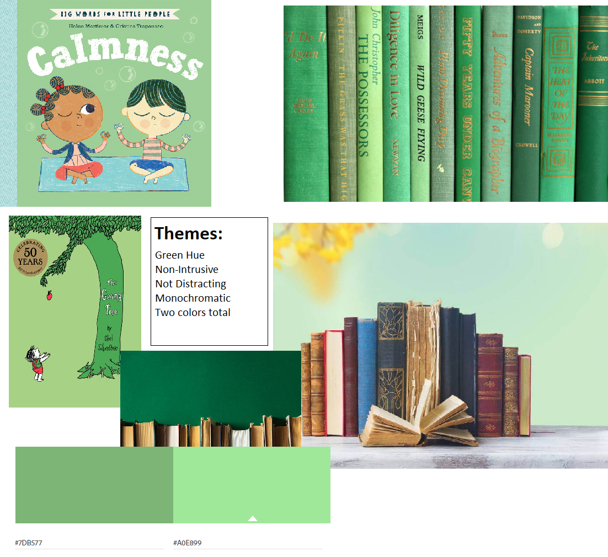

Prepared by Colton Knutzen 2023
Chayot Chronicles is a web-serial aimed to give users a unique reading experience. New chapters will be posted weekly accompanied by additional daily articles that expand on the world, characters, and story. Chayot Chronicles is a self-published, electronical work rather than the traditional paper and cover. This gives the client/author total freedom over the story, timelines, and potential team members that will collaborate on the project. This site is different than other online publishing sites as it’s a completely original story, i.e. not fan-work, and isn’t in a comic format.
Note: The client is myself, but I will try to refrain from referring in the first person. I will not be building every page nor include all the functionality listed below, as I will continue to develop this site outside the scope of this Web Development program.
One main goal of the site is for it to generate enough revenue to support the client, and possibly a small team, for it to be a full-time job. The following will be attempted to achieve this:
Online Ad Revenue are a major market currently. They are seen everywhere with this type of content online from news, sport, game articles, to Wikipedia-like sites, and the infamous click-bait sites. That is why the primary income will come from Ad Revenue. The client would prefer the content and main draw to be free access and not locked behind a paywall. This is why something like patron was consider at first but ultimately decided against.
Google Sense will be the first attempt at implementing Ad Revenue. It seems easily, competitive, and potentially the best pay-to-extra work. Additional services could be explored if this service doesn’t meet the goals.
But the thing that sets Chayot Chronicles apart from other Ad Revenue sites is that instead of short articles, it’s main content is a full-blown novel. And when you are reading a book, nothing is worse than being ripped out of the immersive story. Because of that, the client wishes to set the following restrictions to the Ads and placements:
This will be the initial attempt at Advertisement implementation, but will be constantly monitored and revised.
Note: I will not be implementing Google Sense for the capstone, but will have images as placeholders.
Depending on the success of the site and demand, merchandise and an in-site store could be explored. There, hardcopies of the books could be sold along with t-shirts, pens, posters, mugs, etc. Merchandise that can be sold using the digital assists already created for the site, like logos, symbols, popular phrases, etc.
For free, original content such as this, merchandise is a great income source, but requires the IP to have the demand for it.
Setting up a Ko-fi account will be done, but will not be pushed onto the readers. This monetization system will be more hidden from the general public and only for those that ask or seek it out.
The idea of setting up a Patron account to offer “early access” to content has been proposed, but will need time to explore. Possibility not even until the site has already established itself.
The main content will be seasonal, meaning that the entire book, or Book, will be written, edited, and complied ahead of time. While said content is being published on the site, work on the next Book will begin. Then when all that content has been published, there will be an off-Book during which the next Book will be finished.
Rather than dropping the entire Book at once, each Chapter will be published once a week. This will give the author time to work on the next Book while keeping the readers retention and site updated.
Daily articles will be additional pages that explore upon the characters, ideas, plots, and world that were introduced in the last chapter. This will keep engagement with social media higher and give the site frequent updates.
The idea of releasing articles about the upcoming chapter to “hype up” what’s coming has been rejected in fear of “spoiling”. So instead, daily articles will only pertain to what has already been released.
During the off-Book, there will be limited Daily Articles, as the author will be focusing on finishing the next Book. But when the release date is near, Daily Articles will resume for marketing and giving the readers time to be drawn back into the world. Despite the above statements, these Daily Articles will be of unreleased, upcoming content.
The Chayot Chronicles will be both a database of additional content as well as the main site for said content. This gives the readers easy access to anything they’d like to know about the world and characters while retaining them on this site rather than them seeking the information elsewhere, like a Wikipedia site.
This also gives the readers the ability to choose their level of engagement. Some may only care about reading the Chapters. Some may only read the entire Book once it’s all been published. And some may want to read every single additional post and article published.
One possible Additional Content would be side stories. These would be Chapters and plot that would be fun to explore, but just don’t fit in the narrative of the main plot. These would typically be more casual, since they are optional content, and would focus on more side characters.
These additional content articles will give the Chayot Chronicles a deeper world building experience. Some examples include character profiles, or Dossier, that give insights into their backgrounds and histories, and physical descriptions like hair and eye color.
Or, since there is a school setting, they could have lessons that expand upon the world that happen “outside the pages”.
Another major benefit to having additional content on-site is that they would act as references and refreshers. For example, a character returns to the main plot that hasn’t been heard of for a few years. Readers would be able to easily look the up to give them a quick reminder of who they are and what they do. Same things go for concepts, terms, locations, etc.
Going along with the above, the user experience will drive everything. The interface and easy access to the additional content database needs to be something exciting and fun, and avoid the feeling of “I have to go out of my way to look up this term.”
To achieve this effect links will be available everywhere, and embedded into the content. This why they don’t have to stop what they are reading, go to the nav or search bar, and travel through those portals. Instead, they can click on the word and be taken directly to what they want to learn more about
Once they’ve learned what they want, they can quickly return to where they left off.
For those that would like to explore the world in dept, having links in all the content would create this “rabbit hole” effect, which I sure most people have experienced at some point. Where one things lead to another and they are 15 pages deep from where they started. More page loads and click means more Ad revenue.
The mobile experience is key. Not only is mobile traffic higher than desktop, but I believe many would prefer to read in a comfy chair on a tablet or mobile device rather than at a desk.
The possibility of a web-based app is highly considered and could be developed depending on demand.
[Note: I ran out of shapes in the free version, which is why there aren’t many arrows.]

A side nav will be used as the main navigation area, because it gives much more room for links. A top nav will be used to hold a search bar, a home link, a recent Chapter link, and about page.
The homepage will serve has, well, the homepage. It will be the first page when visited. The first content section will feature a constant link to the most recent Chapter. Below that will have a “Changelog” type list, with the date and what new articles where published that day.
The purpose of this page is to have list with alphabetical sections of all the terms and lingo used with a one to two sentence description. This will be an easy reference for terms the readers might forget or need a quick refresher on.
The catalogue would be a list of every page on the site. It would be less for the public and possible more for the client and developers.
The purpose of the About Page is to tell visitors what the Chayot Chronicles project is, what the future goals are, a section for business inquires, social media, and an F.A.Q.
There will not be a form nor a contact me section, as these functions don’t make sense for this type of site. If anyone is wishing to contact the client for business inquires, there will be an email provided protected behind a button and a reCAPTCHA.

These are the most important pages on the site. They are where the main story will be posted.
The Books (Landing) will have a list of every Book with brief description of what they are. There will only be one page of this.
Book # will have a list of every Chapter in said Book with a brief description. Each Book will have one of these pages.
Chapter/Title (Template) will be the template used for the first page of each Chapter.
Chapter/Page (Template) will be the template used for every page in the Chapter
Books (Landing)
“Book Title”
Chapter/Title (Template)
Chapter/Page (Template)
Chapter/Preview (Template)

Groups (Landing) will have an alphabetical list of all the factions, groups, clubs, parties, etc. that appear in the Chayot Chronicles. There will be one of these pages.
Group (Template) will be the individual page for each of those groups that give a bit more background on them. Each group will have their own page.

Characters (Landing) will have an alphabetical list of all the characters. There will be one of these pages.
Character Dossier (Template) will be the individual page for each character. Each character will have their own page.

Points of Interests (Landing) will have an alphabetical list of all the locations that appear in the stories. There will be one of these pages.
Point of Interest (Template) will be the individual page about a location. Each location will have their own page.

Library (Landing) will have an alphabetical list of all the in-world books, letters, notes, journals, recordings, etc. There will be one of these pages.
In-World Book (Template) will be the individual list of the above. Each will have their own page with every entry listed within this page

Classes (Landing) will have a list of all the subjects within the story. These are the broadest section and encompass many topics. For example, Martial Arts will be one of the subjects listed here. There will be one of these pages.
Subject (Template) will be the page for each subject, with its lessons listed out. For example, Martial Arts will have its own page with each type of martial art listed here. There will be one of these pages for each subject.
Lesson (Template) will be the individual page for a specific lesson. For example, Lightning Art is a type of Martial Arts. This page would go into details about this specific martial arts. Each lesson in each subject will have their own page.

Lilonons (Landing) will be a list and brief description for each of the 11 Lilonons (or nations).
Lilonon/Subsection (Template) will be the individual page for each Lilonon and their subsection. The subsections will consist of:
Content Nav Bubbles: Under the Lilonon name will be a line of buttons that will be linked to each of the subsections. whichever subsection is currently being viewed will be the button lit up.
Table of Contents Nav box: This will display all the headers and such within the page, and give the readers easy jumping around the page.
The purpose of the shop section will be to sell merchandise based on the franchise. Undecided on if it’ll be in-house store or just a link to a 3rd-party site.

This needs basic development.

This needs basic development.

This needs basic development.
The attached font sizes and hierarchies will be used.
I’ve settled on Georgia font family because I wanted a font that’s;
The attached colors will be used for the Nav bars.
I’ve decided on green and monochrome because I wanted the colors to be as least intrusive as possible when someone is reading. I wanted a color to give a calming effect as well. That’s why no bright colors are being used.
Green is also the least used colors in my Nations colors, so it won’t conflict with them.

The content area will have a very slight light grey tint to it, as grey backgrounds are easier on the eyes for extended periods of reading than white.
The color of the Ad columns will be a slightly darker grey to give it some contrast. An inner drop shadow will be used to give it the lowest visual hierarchy, and give all the good content areas to pop up.
Text will be black, because black is better for the eyes to read for extended periods of time.